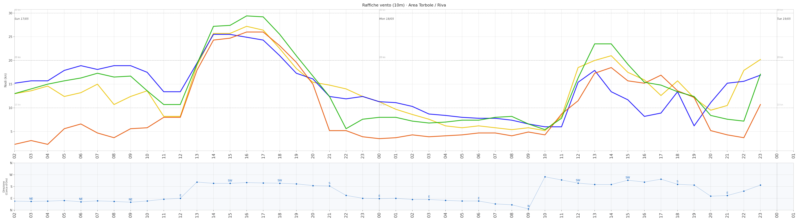

Óra · Torbole / Riva
Meteogramma

Pelèr · Medio Garda
Meteogramma 1

Δ Pressione Bolzano – Brescia
Pelér & Óra · Profiwetter

Raffiche · Area Torbole / Riva
Previsione 3 giorni · Open-Meteo ICON

Pelèr · Medio Garda
Meteogramma 2